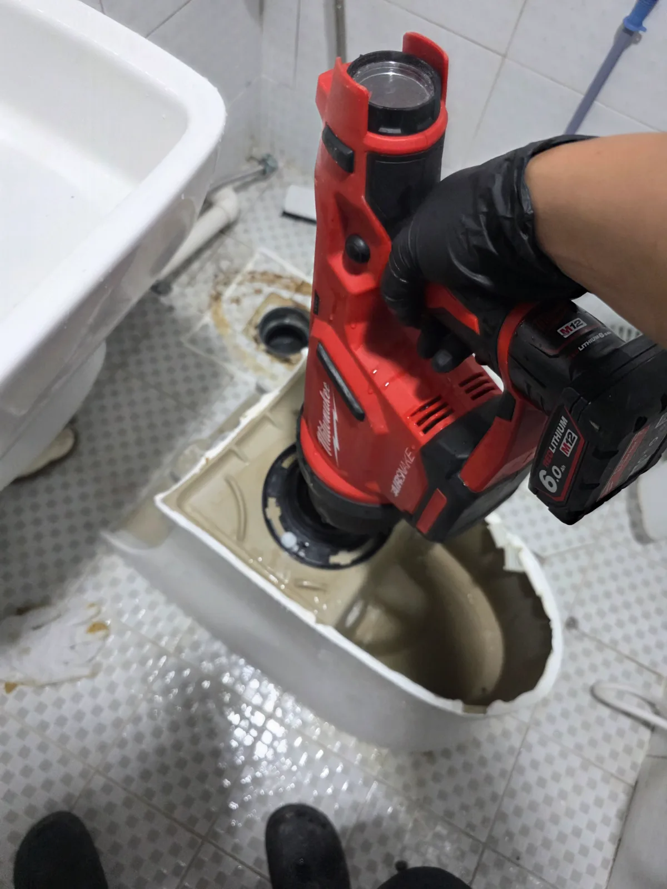
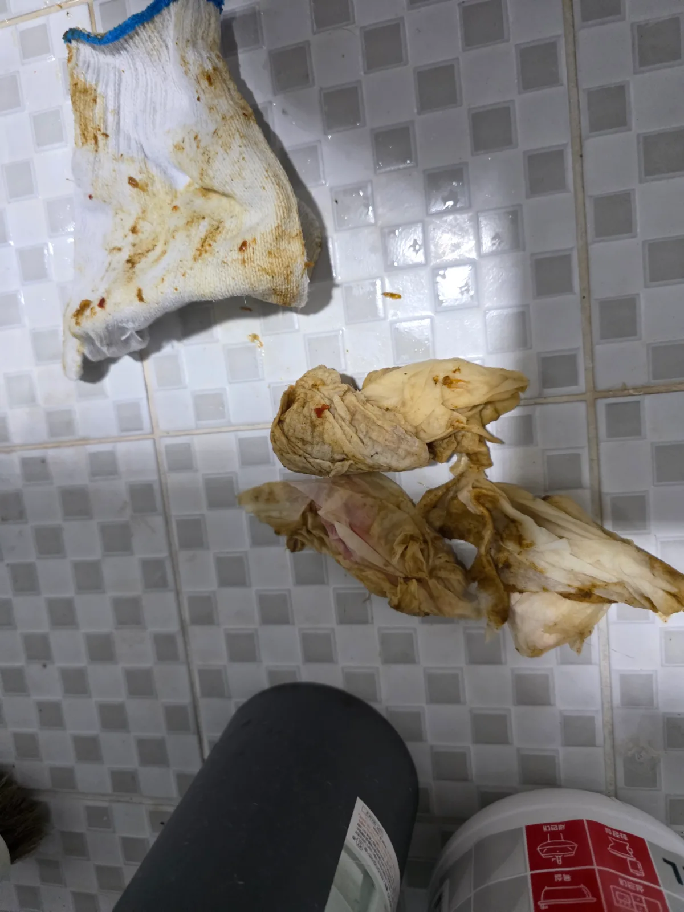

안양시 만안구 안양동 변기막힘, 현장 도착 후 진단
안양시 만안구 안양동에서 변기가 자주 막힌다는 요청을 받고 필요한 장비를 준비해 현장으로 출동했습니다.
이번 현장은 고객님께서 신라건축설비를 처음 접한 상태에서 무작정 작업을 맡기신 경우가 아니었습니다. 기존에 신라건축설비가 공개한 블로그와 여러 변기막힘 현장사례를 미리 살펴보신 뒤 작업 방식과 전문성을 확인하고 연락을 주셨습니다.
그동안 변기가 반복적으로 막혀 불편을 겪으셨던 만큼 고객님께서는 이번에는 단순히 일시적으로 물길만 뚫는 것보다 변기를 탈거해 내부를 제대로 확인하고 시원하게 해결해주기를 원하셨습니다.
변기막힘은 증상이 비슷하더라도 원인이 다를 수 있습니다. 특히 같은 변기가 반복적으로 막힌다면 단순 관통만 반복하기보다 이물질이 내부에 남아 있는지, 더 깊은 오수배관에 문제가 있는지 등 현장 상태를 고려해 작업 범위를 판단하는 것이 중요합니다.
신라건축설비는 고객님이 큰 작업을 원한다고 해서 무조건 작업 범위를 확대하지 않습니다. 현재 증상과 현장 상태를 먼저 확인하고 필요한 작업 방법과 범위, 비용에 영향을 주는 요소를 설명한 뒤 실제 필요한 작업을 진행하는 것을 중요하게 생각합니다.
1단계: 증상 확인과 필요한 장비 작업
이번 안양동 변기막힘 현장에서는 반복적으로 막혔다는 증상과 현장 상태를 확인한 뒤 변기를 바닥에서 탈거해 내부 통수 구간을 직접 작업했습니다.
변기탈거 후 Milwaukee AirSnake 에어건을 이용해 변기 내부에 걸려 있던 이물질을 밖으로 제거하는 작업을 진행했습니다.
그 결과 변기 내부에서 물티슈·청소포 계열로 보이는 이물질이 여러 장 나왔습니다. 실제 제거된 이물질을 확인하면서 반복적으로 발생했던 변기막힘과 관련된 원인을 현장에서 직접 확인할 수 있었습니다.
단순히 물이 내려가는 상태만 만드는 것이 아니라 내부에 걸려 있던 이물질을 실제로 밖으로 제거하는 데 집중했습니다.

2단계: 원인 구간 처리와 정상 작동 확인
물티슈·청소포 계열 이물질을 제거하면서 Milwaukee AirSnake 에어건을 이용해 변기 내부 통수 구간을 작업했습니다.
이번 작업의 핵심은 당장 물이 내려가게 만드는 데 그치지 않고, 변기를 직접 탈거해 내부에 걸려 있던 이물질을 밖으로 제거했다는 점입니다.
이물질 제거 작업을 마친 뒤에는 탈거했던 변기를 원위치에 깔끔하게 재설치해 마무리했습니다.
고객님께서도 전체 작업 과정을 직접 확인하셨습니다. 처음부터 신라건축설비의 블로그와 현장사례를 보고 작업을 맡겨주신 만큼 실제 작업 과정과 제거된 이물질을 확인한 뒤에는 **“역시!”**라며 크게 만족해주셨습니다.
온라인에서 보여드린 실제 현장사례가 새로운 고객님의 신뢰로 이어지고, 다시 실제 작업 과정과 결과로 그 신뢰를 확인해드릴 수 있었던 의미 있는 현장이었습니다.

작업 결과와 재발 방지 안내
안양시 만안구 안양동 변기막힘 현장은 변기탈거와 Milwaukee AirSnake 에어건 작업을 통해 내부에 걸려 있던 물티슈·청소포 계열 이물질을 제거하고 변기를 원위치에 깔끔하게 재설치했습니다.
물티슈나 청소포처럼 물에 쉽게 풀리지 않는 제품은 변기에 버리지 않는 것이 중요합니다. 한두 장은 내려가는 것처럼 보여도 변기 내부의 굴곡진 통수 구간에 걸릴 수 있으며, 반복적으로 투입될 경우 다른 이물질과 함께 막힘을 만들 가능성이 커집니다.
특히 같은 변기가 자주 막힌다면 그때마다 일시적으로 물길만 확보하는 것보다 반복되는 원인이 무엇인지 확인하는 것이 중요합니다. 신라건축설비는 현장 상태에 따라 석션, 관통, 변기탈거, 에어건 등 필요한 방법을 선택해 실제 막힘 원인을 확인하고 해결하는 데 집중합니다.
작업 범위와 비용은 막힘 위치와 이물질 상태, 변기탈거 여부와 필요한 장비 등에 따라 달라질 수 있습니다. 현장 상태를 먼저 확인한 뒤 필요한 작업과 비용에 영향을 주는 요소를 설명하고, 불필요한 작업을 무조건 추가하기보다 실제 필요한 범위에서 진행하는 것을 중요하게 생각합니다.
작업 후에도 시공 부위와 관련해 이상 증상이 나타날 경우 기존 작업 내용을 바탕으로 상태를 확인하고 필요한 사후 대응을 진행합니다.
이번 안양동 사례는 신라건축설비가 홈페이지와 블로그에 실제 작업 과정을 꾸준히 공개하는 이유를 보여주는 현장이기도 합니다. 고객님께서 기존 현장사례를 통해 변기막힘 작업 방식과 전문성을 먼저 확인하고 업체를 선택하셨고, 현장에서는 변기탈거와 전문 장비를 이용해 실제 막힘 원인을 확인하며 작업했습니다.
신라건축설비는 안양시 만안구를 비롯한 경기권과 서울 전 지역에서 변기막힘·싱크대막힘·하수구막힘을 전문적으로 해결하고 있습니다. 단순 생활 막힘부터 배관 내시경검사, 석션, 관통, 샤프트, 고압세척까지 현장 상태에 맞는 전문 장비와 공법을 선택하며, 공용배관·오수관 문제나 배관 보수·교체가 필요한 경우 대형 배관공사까지 연계해 자체 대응할 수 있습니다.
최종 조치: 고객님의 요청과 반복되는 막힘 증상을 고려해 변기를 탈거한 뒤 Milwaukee AirSnake 에어건을 이용해 내부 통수 구간을 작업했습니다. 물티슈·청소포 계열로 보이는 이물질을 밖으로 제거한 뒤 변기를 원위치에 깔끔하게 재설치해 작업을 마무리했습니다.
현장 방문 전 확인하는 비용과 작업 범위
신라건축설비는 현장 증상과 배관 구조를 확인한 뒤 필요한 작업과 예상 비용을 안내합니다. 단순 관통으로 해결되는지, 배관내시경·석션·고압세척 또는 변기 탈거가 필요한지는 현장 상태에 따라 달라집니다. 출장비와 야간 작업비, 추가 장비 비용이 발생할 수 있는 경우 작업 전에 먼저 설명하고 동의를 받은 범위에서 진행합니다.
업체를 선택할 때 확인할 사항
무조건적인 ‘0원’ 표현보다 실제 작업 범위, 추가 비용 조건, 사용 장비와 사후 대응 기준을 확인하는 것이 중요합니다. 해결되지 않았을 때의 비용 기준과 작업 후 동일 증상 발생 시 점검 범위를 사전에 문의해두면 불필요한 분쟁을 줄일 수 있습니다.
안양시 만안구 변기막힘 자주 묻는 질문
변기를 꼭 탈거해야 하나요?
안양시 만안구 안양동에서 변기가 반복적으로 막힌다는 요청이 접수됐습니다. 이전에도 자주 막혔던 변기였기 때문에 고객님께서는 이번에는 일시적으로 물길만 확보하기보다 변기를 탈거해 내부를 제대로 확인하고 시원하게 해결해주기를 원하셨습니다.처럼 증상이 나타나더라도 원인은 현장마다 다를 수 있습니다. 장비와 배관 구조를 확인한 뒤 필요한 작업 범위를 안내합니다.
작업 전 비용을 알 수 있나요?
작업 전 증상과 현장 여건을 확인해 예상 범위와 비용을 먼저 안내합니다. 변기 탈거, 장비 추가 투입 또는 공용배관 작업이 필요한 경우 고객 동의 없이 임의로 진행하지 않습니다.
같은 증상이 다시 생기면 어떻게 하나요?
완료 후 정상 작동을 함께 확인하고 작업 범위에 따른 사후 안내를 드립니다. 동일 증상이 반복되면 현장 기록을 기준으로 원인을 다시 점검합니다.
변기막힘 서울·경기 출동지역
신라건축설비는 안양시 만안구 안양동 현장을 포함해 서울 25개 구와 경기도 31개 시·군의 배관 문제를 상담합니다. 현장 거리와 기사 배정 상황에 따라 출동 가능 여부를 먼저 안내드립니다.
서울 전 지역
강남구 · 강동구 · 강북구 · 강서구 · 관악구 · 광진구 · 구로구 · 금천구 · 노원구 · 도봉구 · 동대문구 · 동작구 · 마포구 · 서대문구 · 서초구 · 성동구 · 성북구 · 송파구 · 양천구 · 영등포구 · 용산구 · 은평구 · 종로구 · 중구 · 중랑구
경기도 주요 출동지역
수원시 · 용인시 · 고양시 · 화성시 · 성남시 · 부천시 · 남양주시 · 안산시 · 평택시 · 안양시 · 시흥시 · 파주시 · 김포시 · 의정부시 · 광주시 · 하남시 · 광명시 · 군포시 · 양주시 · 오산시 · 이천시 · 안성시 · 구리시 · 의왕시 · 포천시 · 양평군 · 여주시 · 동두천시 · 과천시 · 가평군 · 연천군